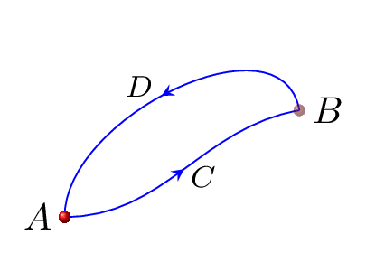
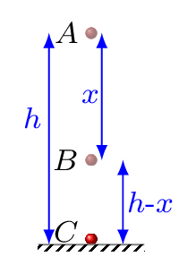
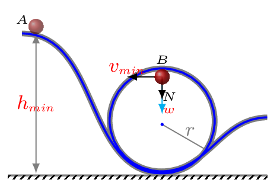

Section 5.1 Work, Energy, and Power
If an object is displaced along the same direction as the force is applied then the work is said to be done. If a force \(F\) displaces a body to a distance \(d\) along the direction of force then work can be calculated by \(W= Fd\text{.}\)
Subsection 5.1.1 Work
If an object is displaced along the same direction as the force is applied then the work is said to be done. If a force \(F\) displaces a body to a distance \(d\) along the direction of force then work can be calculated by \(W= Fd\text{.}\) Work is a scalar quantity as it is a measure of transfer of energy from one object to another. The physical quantities which can be obtained by dot product of two vectors are scalar.
\begin{equation*}
\vec{A} \cdot \vec{B} = A B \cos\theta = A_{x} B_{x} + A_{y} B_{y} + A_{z} B_{z} \quad \textbf{Dot Product}
\end{equation*}
The unit of work is joule in SI system, \(Joule (J) = N.m\text{;}\) in FPS system, ft-lb = foot.pound; and in CGS system, erg = dyne.cm.
Suppose a block of mass \(m\) is displaced to a distance \(d\) along the horizontal direction by the application of force \(\vec{F}\) [Figure5.1.1.(a)]. If the force \(\vec{F}\) is acting along a direction \(\theta\) to the horizontal, then work done by the force is given by
\begin{equation}
W=\vec{F}\cdot\vec{d}=Fd\cos\theta = (F\cos\theta)d = F_{x}d\tag{5.1.1}
\end{equation}
The work done by a force is defined as the product of component of the force in the direction of displacement and the magnitude of displacement. Work in physics is different than our daily life work. Suppose you are pushing a rigid brick wall very hard, after some time you get exhausted because you lose your body energy. In our daily life we called this action as a work, but in physics this is not a work because the object did not displace from its position. Hence in physics, whether the force or the displacement is zero, there is no work. Depending upon the angle between the applied force and the displacement, work could be negative, positive, or zero. For example, work done by a frictional force, or work done by a force acting opposite to the motion of object,
\begin{equation*}
W_{f}=\vec{f}\cdot\vec{d} = -fd,
\end{equation*}
work done by a force acting parallel to the motion of object,
\begin{equation*}
W_{F}=\vec{F}\cdot\vec{d} = Fd\cos0^{o}=Fd,
\end{equation*}
and work done by a force acting perpendicular to the motion of object,
\begin{equation*}
W_{F}=\vec{F}\cdot\vec{d} = Fd\cos90^{o}=0.
\end{equation*}
The work can be found by calculating are area under the curve in force vs displacement graph. The sum of these area between initial position to final position along each direction is equal to work done by a variable force F(r), such as a force of spring.
Subsection 5.1.2 Energy
The capacity of doing work is known as energy. It is a scalar quantity and its unit in SI system is Joule. Energy exists in many different forms, such as thermal energy, sound energy, electrical energy, magnetic energy, gravitational energy, chemical energy, mechanical energy, etc. The energy associated with the motion and position of an object is termed as mechanical energy. We focus our understanding here in mechanical energy. Mechanical energy is of two types, kinetic energy and potential energy. The kinetic energy is associated with the motion of the object and potential energy is associated with the position of the object with respect to some other object. For example: elastic potential energy due to a spring force, gravitational potential energy due to gravity, etc. The sum of kinetic and potential energy gives the total mechanical energy of the object.
Subsubsection 5.1.2.1 Work-Energy Theorem
From equations of motion, we have
\begin{equation}
v^{2} =u^{2}+2as \tag{5.1.2}
\end{equation}
where \(v\text{,}\) \(u\text{,}\) \(a\) and \(s\) are final velocity, initial velocity, acceleration, and distance covered by the particle, respectively. From Newtons second law of motion, we have -
\begin{equation}
F=ma \tag{5.1.3}
\end{equation}
\begin{equation*}
v^{2} =u^{2}+2\frac{F}{m}s
\end{equation*}
\begin{equation*}
\text{or,}\quad \frac{1}{2}mv^{2}-\frac{1}{2}mu^{2}=Fs
\end{equation*}
Here the term \(\frac{1}{2}mv^{2} \) is called final kinetic energy, \(KE_{f}\text{,}\) the term \(\frac{1}{2}mu^{2} \) is called initial kinetic energy, \(KE_{i}\text{,}\) and the term \(Fs\) is work done by a force. Hence,
\begin{equation*}
KE_{f}-KE_{i} = W\qquad \Rightarrow\quad \Delta k=W
\end{equation*}
Which is known as work-energy theorem. It states that work done by a net force acting on a body is equal to the chnage in its kinetic energy.
Subsubsection 5.1.2.2 Kinetic Energy:
It is the energy associated with a body during its motion. The quantity \(\frac{1}{2}mv^{2} \) is called the kinetic energy, i.e.,
\begin{equation*}
KE=\frac{1}{2}mv^{2}.
\end{equation*}
The kinetic energy associated with a body in translational motion is called a translational (linear) kinetic energy. The kinetic energy in rotational motion is called a rotational kinetic energy.
Subsubsection 5.1.2.3 Potential Energy:
The energy stored in a body due to its position is known as potential energy. If work is done by a force to change the position of a body, then this work is stored in the body at that position in the form of potential energy. The restoring force plays a crucial role to acquire potential energy. For example, a charged particle near or far from another charge; a squashed or stretched rubber ball, a body above the surface of the earth. The potential energy of the body at any position is the work done against the restoring force in moving the body from the zero point (reference point) to that position. The reference point (or, the zero point) is the point where potential energy is assumed to be zero. If work has to be done on a body to take it to a new location, then the potential energy increases in the process. If the external force does the work then the potential energy change is negative.
1
The zero point is so chosen that it could be infinitely far away. Such as at infinity, at the center of the earth, at sea level, at the floor, at the table top, or at any other point. This is because only potential energy differences between two positions are physically measurable and cannot depend on the a rbitrary choice of the zero point.
- Gravitational Potential Energy: Suppose a body of mass \(m\) is lifted to a height \(h\) against gravity without acceleration, then work done by the applied force, \(F_{a}\) is given by\begin{equation*} W_{a}= F_{a}\cdot h= -F_{g}\cdot h =-mgh \end{equation*}This work is stored in the body in the form of gravitational potential energy. Hence when this body is released from the position the body drops down to the ground again. Therefore, the work done by the gravity to pull that object towards earths surface is given by\begin{equation*} W_{g}= F_{g}h = mgh = PE \end{equation*}This is gravitational potential energy in a uniform gravitational field, \(g\text{.}\) The gravitational potential energy due to two point masses is given by\begin{equation*} -G\frac{Mm}{r}. \end{equation*}Where \(M\) is the mass of an object at the origin, \(m\) is the mass of an object at a radial distance \(r\) from the origin and the zero point is chosen at infinity.
- Elastic Potential Energy: When the body (or, spring) is compressed or stretched external force has to do the work, this work is stored in a body (or, spring) in the form of elastic potential energy. It is the energy due to work done by a restoring force.\begin{equation*} W =F_{avg} .d = -\frac{1}{2}kx^{2}= E_{s} \end{equation*}where \(F = -k x,\) is the restoring force, \(k\) is elastic (or, spring) constant (it defines the stiffness of the spring), and \(x\) is extension in the spring.
Since work done by a force in principle depends on the path taken by the body, (as can be seen in \(W=fx\) where \(f\) is a frictional force), but if the force is conservative then work done is independent on the path taken by the body rather it depends on the initial and final position of the body [Subsection5.1.3].
Subsection 5.1.3 Conservative and Non-Conservative Forces
If a body under the action of a force does no net work during any closed loop, then the force is conservative, otherwise, it is non-conservative. Non-conservative forces are dissipative forces such as friction or air resistance. These forces take energy away from the system as the system progresses, energy that you cant get back. These forces are path dependent and therefore it matters where the object starts and stops. Gravity, spring force, electric and magnetic, and other restoring forces are conservative. Friction, normal force, tension, and other applied forces are non-conservative. Conservative forces are state function, and non-conservatives forces are path function. The work done by a conservative force is independent of the path, i.e., the work done by a conservative force is the same for any path connecting two points.

\begin{equation*}
\because W_{BDA}=-W_{ACB}
\end{equation*}
Subsection 5.1.4 Principle of Conservation of Energy
It states that in an isolated system, the total energy of the system is conserved. That is, energy can neither be created nor be destroyed, it can only be converted from one form of energy to another. For example, when a block slides down a slope, potential energy is converted into kinetic energy. When friction slows the block to a stop, the kinetic energy is converted into thermal energy. In case of mechanical energy the sum of kinetic energy and potential energy is conserved.

For an interacting system,
\begin{equation*}
E_{f} = E_{i} + W_{ext}
\end{equation*}
and for an isolated system,
\begin{equation*}
E_{f} = E_{i}\text{.}
\end{equation*}
Mechanical energy is due to the position and motion of the object. Therefore,
\begin{equation*}
E=KE+PE=\frac{1}{2}mv^{2}+mgh
\end{equation*}
Consider a body of mass \(m\) is falling from rest at height \(h\) to the ground. We are interested in its total energy at points A, B, and C as shown in Figure5.1.3. From the principle of conservation of energy, total energy at any point always remains same, i.e.,
\begin{equation*}
E_{A}=E_{B}=E_{C}
\end{equation*}
Where
\begin{equation*}
E_{A} = \frac{1}{2}mv_{A}^{2}+mgh= mgh \quad [\because v_{A}=0 \quad\text{at point A}]
\end{equation*}
When the body reaches to point B, then \(KE_{B} = \frac{1}{2}mv_{B}^{2},\) and \(PE_{B}=mg(h-x).\)
\begin{equation*}
\therefore E_{B} = \frac{1}{2}mv_{B}^{2}+mg(h-x)
\end{equation*}
Using equation of motion in 1D,
\begin{equation*}
v_{f}^{2}=v_{i}^{2} +2gy
\end{equation*}
\begin{equation*}
\text{or,}\quad v_{B}^{2}=0+2g(x)=2gx
\end{equation*}
\begin{equation*}
\therefore\quad E_{B} = \frac{1}{2}m(2gx)+mg(h-x) =mgx+mgh-mgx= mgh=E_{A}
\end{equation*}
Similarly,
\begin{equation*}
E_{C} = \frac{1}{2}mv_{C}^{2}+0 =\frac{1}{2}mv_{C}^{2} = \frac{1}{2}m(2gh) = mgh=E_{A}=E_{B}
\end{equation*}
\([\because v_{C}^{2}=0+2g(h)=2gh].\) Which proofs that the mechanical energy remains conserved at each and every point of the motion of an object.
Subsection 5.1.5 Energy Diagram
From the principle of conservation of energy as kinetic energy of the system increases its potential energy decreases. This means the force acting on a particle is the rate at which the potential energy decreases in any given direction as shown in Figure5.1.4.(a). At point a, the slope of \(U(x)\) is positive, i.e., the x-component of the force is in the negative x direction. At the point b, the slope is negative and hence the force is positive. The force increases as the slope of \(U(x)\) increases. The point in the middle, at \(x = 0\text{,}\) is is a minimum of \(U(x)\) and hence the slope is zero. Therefore the x-directed force F at that point is zero as well. A point at which the force on an object is zero is a point of static equilibrium [Subsubsection4.1.4.1], i.e., a particle is at rest and will remain there at rest. If the particle is displaced by a small distance to the right or the left of the equilibrium point, the force pushes the particle back towards equilibrium. Points where the force is zero and small displacements cause a restoring force to bring the particle back to the same points are called stable equilibrium points.
The forces between neutral atoms are extremely small, nearly zero, if atoms are very far away from one another. This is illustrated as an extended region where the potential energy is flat for large r as shown in Figure5.1.4.(b). Such region is called neutral equilibrium because there are no forces that either restore or repel the two atoms. When two atoms reaches closer, their interaction becomes first weakly attractive due to quantum dipole-induced dipole interactions and then weakly repulsive as the two atoms start to touch each other. There is a potential energy minimum in between where two atoms separated by a certain distance can be in stable equilibrium without being chemically bound. If atoms approaches more closely then they encounter a second potential energy well that is at first strongly attractive to an actual chemical interaction between them followed by a hard core repulsion as the electron clouds are prevented from interpenetrating by the Pauli exclusion principle. This second potential energy well is often modeled by a Lenard-Jones potential energy corresponding to the inverse powers of \(r\text{.}\) It also has a point of stable equilibrium. In between, there is a point where the growing attraction of the inner potential energy well and the growing repulsion of the outer potential energy well balance, so that the potential energy function has a maximum. At this maximum the slope is zero, a position of force equilibrium but because the force on either side of this point pushes the particle away from it, this is a point of unstable equilibrium. Unstable equilibria occur at isolated maxima in the potential energy function, just as stable equilibria occur at isolated minima.
2
Introductory Physics-I, Robert Brown, Duke University
Subsection 5.1.6 Loop-the-Loop Track
A loop-the-loop track consists of an incline plane that leads into a circular loop of radius \(r\text{.}\) When a body at rest is released from a certain minimum height \(h_{min}\) of the inclined plane it will make around the loop without falling. Assuming no friction during motion. The height of the ramp from where the body is released must be so chosen that when the body reaches at the top of the loop, it must be moving with the certain minimum velocity in order to have necessary centripetal force. At the top point B of the loop the weight \(w\) and normal force \(N\) are acting on the body downward. These forces must be providing a necessary centripetal force. Remember centripetal force is a resulting force it is not something that acts on the body. It must be provided by some other causing forces which can act on the body. Hence at point B,
\begin{equation*}
N+w=F_{c}
\end{equation*}
\begin{equation*}
\text{or,}\quad N+mg=\frac{mv_{B}^{2}}{r}
\end{equation*}
For \(v_{B}\) to be minimum, \(N\to 0\text{.}\)
\begin{equation*}
\therefore mg = \frac{mv_{min}^{2}}{r}
\end{equation*}
\begin{equation*}
g=\frac{v_{min}^{2}}{r}
\end{equation*}
\begin{equation}
\therefore v_{min} = \sqrt{gr} \tag{5.1.4}
\end{equation}

Now from the principle of conservation of energy
\begin{equation*}
E_{B} = E_{A}.
\end{equation*}
\begin{equation*}
\text{or,}\quad KE_{B}+PE_{B}=KE_{A}+PE_{A}
\end{equation*}
\begin{equation*}
\text{or,}\quad \frac{1}{2}mv_{B}^{2}+mg(2r)=0+mgh_{A}
\end{equation*}
For \(h_{A}\) to be \(h_{min}\text{,}\) \(v_{B} = v_{min}.\)
\begin{equation*}
\text{or,}\quad \frac{1}{2}mv_{min}^{2}+mg(2r)=mgh_{min}
\end{equation*}
\begin{equation*}
\text{or,}\quad \frac{1}{2}m(gr)+mg(2r)=mgh_{min}
\end{equation*}
[from eqn. (5.1.4)]
\begin{equation}
\therefore h_{min} = \frac{r}{2}+2r =\frac{5}{2} r\tag{5.1.5}
\end{equation}
If the height of incline (ramp) is less than \(\frac{5r}{2} \) the body will not make a complete cycle around the loop and must fall during its vertical motion inside the loop.